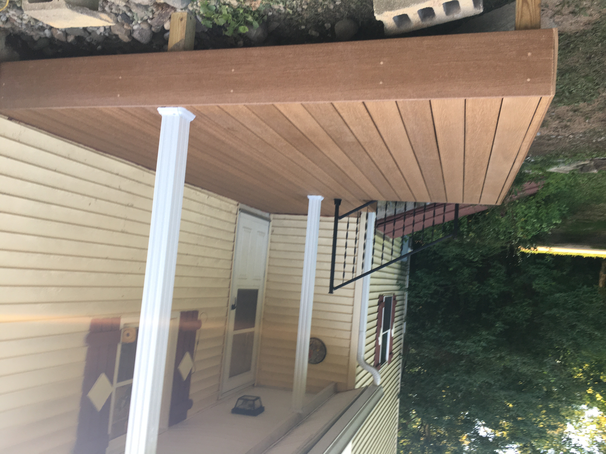

Our fireplace construction service epitomizes warmth, elegance, and timeless charm. Crafting hearths that serve as focal points, we merge functionality with aesthetic allure, enriching interiors with cozy sanctuaries. From classic stone to contemporary designs, our expertise spans diverse styles, each fireplace a testament to artisanal craftsmanship and safety compliance. We meticulously tailor each project to individual preferences, harmonizing architectural elements with client visions. With a commitment to quality and enduring craftsmanship, we sculpt enduring fireplaces that radiate comfort, transforming spaces into inviting retreats. Embracing innovation while honoring tradition, our creations ignite ambiance, fostering cherished moments and a sense of home.

Our patio construction service transforms outdoor spaces into havens of relaxation and entertainment. Melding craftsmanship with innovation, we create personalized sanctuaries, tailored to complement diverse architectural styles and preferences. From sleek, modern designs to rustic retreats, each project embodies meticulous planning and expertise. Our team, versed in material selection and structural precision, crafts enduring, inviting patios that withstand elements and time. Whether envisioning a serene escape or an alfresco social hub, our commitment lies in actualizing dreams, amplifying properties, and fostering outdoor lifestyles. With an eye for detail and a passion for quality, we bring forth bespoke patios, inviting nature's embrace into daily living.
Our deck construction service crafts outdoor retreats, extending living spaces into serene sanctuaries or vibrant social hubs. Seamlessly merging architectural visions with functionality, we design and build tailored decks, from sleek contemporary platforms to rustic escapes. Proficient in material selection and structural integrity, our team ensures durability against diverse elements. Each project is a fusion of meticulous planning and skilled craftsmanship, delivering versatile, enduring decks that harmonize with landscapes and elevate property value. Whether envisioning an alfresco oasis or an entertainment hub, our commitment is to fashion bespoke decks, enriching lifestyles and inviting the outdoors into everyday living with elegance and style.